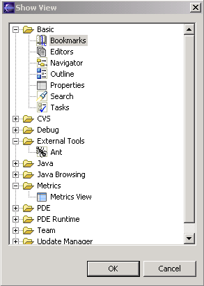
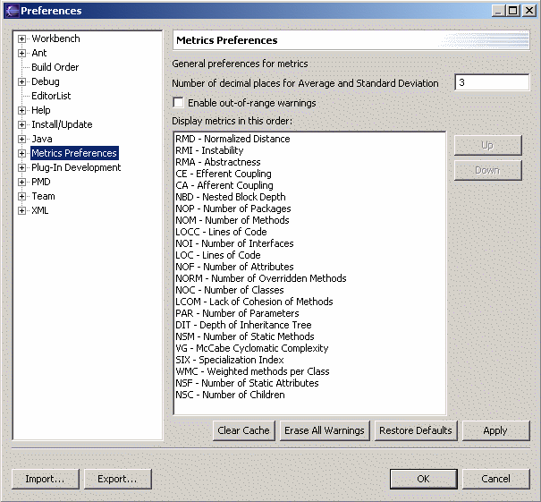
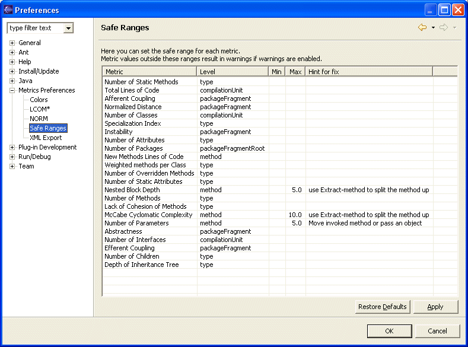
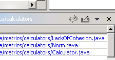
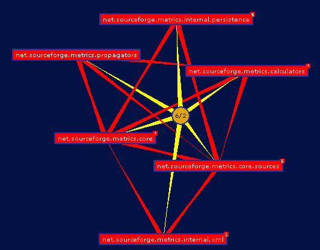
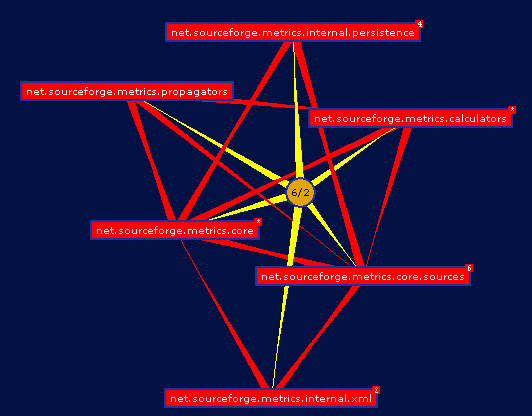
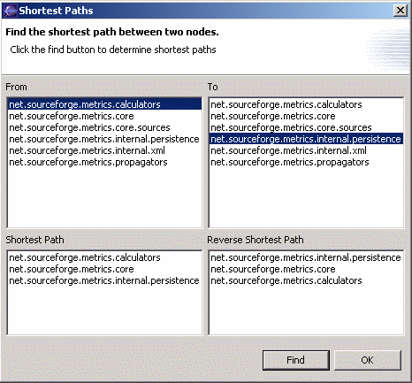
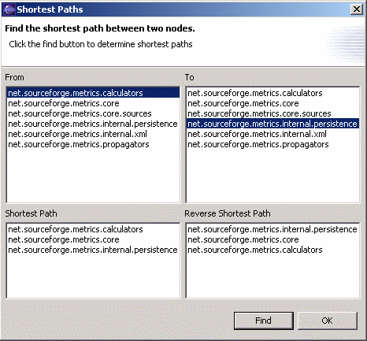

Metrics 1.3.6 - Getting started
Metrics 1.3.6 - Getting started
Note: This version requires Eclipse 3.1
To access the sourceforge project page click here.
What's new:
- Updated to work with eclipse 3.1
- Bug in VG computation fixed
- Bug in lines of code computation fixed
- Bug in CE Computation fixed
- Bug in I Computation fixed
- Batch execution fixed
- Several other minor bugfixes
I want to thank Guillaume Boissier for doing most of the work on this release. Thanks!
I also want to thank Uwe Kubosch for contributing the layered package view. Thanks!
Installation procedure
Run Eclipse, go to Help menu -> Software Updates -> Find and Install ...
On the opening dialog choose Search for new features to install.
Add a new Remote site with the following url
http://metrics.sourceforge.net/update and follow the instructions for installation.
To use the metrics plugin you have to be in a Java or Java Browsing perspective or any other perspective that shows java resources as source folders,
packages and compilation units. The simple resource perspective won't do. This makes sense since the metrics are all about counting aspects of your
java code.
To start using the Metrics View, use Windows -> Show View -> Other and navigate to the Metrics View, as shown in the next image.

Initially the resulting view will show a brief usage message because no metrics have been calculated yet.
To start collecting metrics for a project, right click on the project and from the popup menu select
"Metrics->Enable" (or alternatively, use the properties page ).This will tell Eclipse to calculate metrics
every time a compile happens. Now that you've enabled a project, the easiest way to calculate all its metrics is
to do a full rebuild of that project. The metrics view will indicate the progress of the metrics calculations as they are
being performed in the background. When it's all done, the metrics view will look something like this:
 Note that any metric shown in blue can be double-clicked to navigate to the resource causing the maximum value
for the metric. Since 1.2.0, the metrics table is actualy a table tree, allowing you
to expand each metric to show the values at levels below the selected resource.
The child elements at each level are sorted in descending metric (maximum) value order.
Note that any metric shown in blue can be double-clicked to navigate to the resource causing the maximum value
for the metric. Since 1.2.0, the metrics table is actualy a table tree, allowing you
to expand each metric to show the values at levels below the selected resource.
The child elements at each level are sorted in descending metric (maximum) value order.
Preferences
The metrics preferences allow the display order of the metrics to be changed and the
metrics database to be cleared (to force recalculation of all metrics). In addition, the
toplevel preference page serves as a category for individual metric's preference pages
(category id is net.sourceforge.metrics.ui.MetricsPreferencePage).

As of version 1.0.9 of the plugin, the metrics can now trigger warnings that show
up in the task view as well as the editors, indicating methods and types for which metrics
safe ranges are being violated. The minimum and maximum for each metric can be set in the preferences.
This feature is disabled by default, and has to be enabled on the main preference page.

Export to XML
Metrics can be exported to an XML file to be processed with XSL into any kind of report
you want. To export metrics, select the scope (project, package, etc.) so it is
displayed in the view. Then use the view's toolbar or dropdown menu to select the export function.

Colors
The metrics view can use custom colors for the display of metrics. Three colors are used:
- Default color for in-range colors
- In-range color for linked metrics (those that can be double-clicked to reveal the source in an editor)
- Out-of-range color. These are also double-clickable

Dependency Analysis
Version 1.1.0 and higher include a graphical dependency analyzer. This view is started
from the metrics view menu or toolbar and it only works when a source folder or entire
project is selected.
It shows a dynamic hyperbolic graph of the package dependencies, which can be zoomed and rotated.
Use the radio buttons and scrollbar to manipulate the graph. The red and blue
rectangles represent packages, and the edges their dependencies.
Example:
 The package dependency graph is analyzed for strong components (all nodes reachable
from each other, called "tangle" from now on) and those nodes are colored red. Other packages not participating in cycles
are colored blue. Right-click on the background of the view to reach the popup menu listing
all the tangles found in the dependency graph. If the menu does not list any, you
are in good shape and your dependency graph has no cycles.
If you select a cycle, only packages involved in it are shown, as in the following image.

The little yellow circle connects all packages involved in the tangle. It shows the number
of nodes involved in the tangle and the longest walk. Right-clicking on the tangle center
(the yellow circular node) shows a pop-up menu with the last entry labeled "Analyze Details".
This option invokes a search using the Eclipse search engine for all types involved in the
packages of the tangle. The result is a more detailed dependency graph in which the nodes are types,
and the dependencies are between types. The graph only shows dependencies that cross package boundaries.
Every connection in this graph connects two classes in different packages. The packages themselves
are green rounded rectangles. Analyzing the detail graph is best done with the hyperbolic slider all the
way to the left, so there is no curvature in the surface. In this mode, type nodes tend to cluster around
their package, but at the same time, they gravitate towards where they are most connected. So if you notice
a very long green connection from a package to a type, but that type is located more closely to some other
package, perhaps it needs to move to that package, apparently being more closely related to the classes
in its vicinity. The next image shows an example of this phenomena.
The package dependency graph is analyzed for strong components (all nodes reachable
from each other, called "tangle" from now on) and those nodes are colored red. Other packages not participating in cycles
are colored blue. Right-click on the background of the view to reach the popup menu listing
all the tangles found in the dependency graph. If the menu does not list any, you
are in good shape and your dependency graph has no cycles.
If you select a cycle, only packages involved in it are shown, as in the following image.

The little yellow circle connects all packages involved in the tangle. It shows the number
of nodes involved in the tangle and the longest walk. Right-clicking on the tangle center
(the yellow circular node) shows a pop-up menu with the last entry labeled "Analyze Details".
This option invokes a search using the Eclipse search engine for all types involved in the
packages of the tangle. The result is a more detailed dependency graph in which the nodes are types,
and the dependencies are between types. The graph only shows dependencies that cross package boundaries.
Every connection in this graph connects two classes in different packages. The packages themselves
are green rounded rectangles. Analyzing the detail graph is best done with the hyperbolic slider all the
way to the left, so there is no curvature in the surface. In this mode, type nodes tend to cluster around
their package, but at the same time, they gravitate towards where they are most connected. So if you notice
a very long green connection from a package to a type, but that type is located more closely to some other
package, perhaps it needs to move to that package, apparently being more closely related to the classes
in its vicinity. The next image shows an example of this phenomena.
 Notice the Metric and Constants types. These seem closely related to the calculators package, yet they
are located in the core package.
In the construction of these graphs, connections between a package and its types is stronger than the connections
between types. The connections between types involved in a tangle (red) is stronger than regular connections (blue).
Think of the connections as rubber bands with different elasticity.
In large tangle it is sometimes hard to see why all nodes are connected to each other and how. To help with that,
The tangle popup menu has a "Find Shortest Path" entry that shows the following dialog:

Notice the Metric and Constants types. These seem closely related to the calculators package, yet they
are located in the core package.
In the construction of these graphs, connections between a package and its types is stronger than the connections
between types. The connections between types involved in a tangle (red) is stronger than regular connections (blue).
Think of the connections as rubber bands with different elasticity.
In large tangle it is sometimes hard to see why all nodes are connected to each other and how. To help with that,
The tangle popup menu has a "Find Shortest Path" entry that shows the following dialog:

Headless operation from Ant
Warning : since version 1.3.6 the anttask.jar as been renamed ant-metricstask.jar
As of version 1.3.2 the metrics plugin contains some ant tasks that can be used for headless
operations as part of a nightly build for example. This section describes how to do this.
Running eclipse without ui on an Ant build file
The following example DOS batch file shows how to run a headless build using eclipse,
edit to match your environment:
echo off
setlocal
set JAVA_HOME="c:\program files\jdk141_07"
set VMARGS="-Xmx256m"
REM The JRE java.exe to be used
set JAVAEXE=%JAVA_HOME%\jre\bin\java.exe"
REM The Eclipse startup.jar
set STARTUPJAR="C:\usr\Eclipse3.1\eclipse\startup.jar"
REM The location of your workspace (does not need to exist)
set WORKSPACE=C:\usr\ecworkspace
if not exist %JAVAEXE% echo ERROR: incorrect java.exe=%JAVAEXE%, edit this file and correct the JAVAEXE envar
if not exist %JAVAEXE% goto done
if not exist %STARTUPJAR% echo ERROR: incorrect startup.jar=%STARTUPJAR%, edit this file and correct the STARTUPJAR envar
if not exist %STARTUPJAR% goto done
:run
@echo on
date /t
time /t
%JAVAEXE% %VMARGS% -cp %STARTUPJAR% org.eclipse.core.launcher.Main -noupdate -application org.eclipse.ant.core.antRunner -data %WORKSPACE% -file build.xml %*
date /t
time /t
:done
pause
Note that the metrics builder determines it is running headless by checking for the
"-noupdate" commandline argument. If it finds there is no UI, it calculates the metrics
in the current (foreground) thread instead of queuing them up and forking a background
thread to perform the calculations.
Ant tasks provided by this plugin
<eclipse.build>
Convenience task because I did not like the built-in <eclipse.incrementalBuild> task.
Not strictly related to metrics calculation and for a large part copied from an example in an article by
Barry Searle and Ellen McKay on using Ant with Websphere Studio ApplicationDeveloper.
| parameter | description |
| projectName (String) | Name of the eclipse project to build |
| buildType (String) | One of "incremental", "full" or "auto" |
| failOnError (boolean) | "true" or "false" |
| errorOut (File) | Compiler errors go here |
| errorFormat (String) | One of "txt" or "xml" |
Example:
<eclipse.build
ProjectName="net.sourceforge.metrics"
BuildType="full"
errorOut="errors.xml"
errorFormat="xml"
failOnError="true"/>
<metrics.enable>
Takes only one parameter, projectName and simply enables the metrics for
that project if not already enabled. This adds the metrics nature and build command to the .project file.
Example:
<metrics.enable projectName="net.sourceforge.metrics"/<
<metrics.export>
| parameter | description |
| projectName (String) | Name of the eclipse project to build |
| file (File) | Metrics get exported to this file |
Note that currently only the "metrics-flat-first" export format is supported.
Example:
<metrics.export
projectName="net.sourceforge.metrics"
file="metrics-metrics.xml"/>
build.xml example
<?xml version="1.0" encoding="UTF-8"?>
<project name="net.sourceforge.metrics" default="build" basedir=".">
<target name="init">
<tstamp/>
</target>
<target name="build" depends="init">
<eclipse.refreshLocal resource="net.sourceforge.metrics" depth="infinite"/>
<metrics.enable projectName="net.sourceforge.metrics"/>
<eclipse.build
ProjectName="net.sourceforge.metrics"
BuildType="full"
errorOut="errors.xml"
errorFormat="xml"
failOnError="true"/>
<metrics.export
projectName="net.sourceforge.metrics"
file="metrics-${DSTAMP}-${TSTAMP}.xml"/>
</target>
</project>
Note
To my surprise, metrics calculate just fine without the project being built by the java
builder. If your nightly build does not use eclipse to do the compilation, you can still
calculate the metrics using eclipse without incurring a double compilation cycle.
Simply remove the the java build command from the .project file in the headless project.
Also, only the source folders have to be in the .classpath file since we're not actually compiling
anything, and the metrics builder does not use any jars on the classpath anyways.
Metrics - Meanings
The following provide brief descriptions of each metric. In these descriptions, the word "scope" refers to the selected element in the
navigator, e.g. a project, source folder, package or compilation unit. I used "Object-Oriented Metrics, measures of Complexity" by Brian Henderson-Sellers, Prentice Hall, 1996
as my primary source of inspiration.

Number of Classes
Total number of classes in the selected scope
Number of Children
Total number of direct subclasses of a class.
A class implementing an interface counts as a direct child of that interface
Number of Interfaces
Total number of interfaces in the selected scope
Depth of Inheritance Tree (DIT)
Distance from class Object in the inheritance hierarchy.
Number of Overridden Methods (NORM)
Total number of methods in the selected scope that are overridden from an ancestor class
The calculation of NORM can be customized from its preference page, shown below:
 Here you can control whether to count abstract methods, methods that call the inherited implementation
(through use of super.[same-method] call). Certain methods that are supposed to be overridden can be
excluded explicitly (like toString, equals and hashCode).
Here you can control whether to count abstract methods, methods that call the inherited implementation
(through use of super.[same-method] call). Certain methods that are supposed to be overridden can be
excluded explicitly (like toString, equals and hashCode).
Number of Methods (NOM)
Total number of methods defined in the selected scope
Number of Fields
Total number of fields defined in the selected scope
Lines of Code
since version 1.3.6 Lines of code has been changed and separated into:
TLOC: Total lines of code that will counts non-blank and non-comment lines in a compilation unit. usefull for thoses interested in computed KLOC.
MLOC: Method lines of code will counts and sum non-blank and non-comment lines inside method bodies
Specialization Index
Average of the specialization index, defined as NORM * DIT / NOM. This is a class level metric
McCabe Cyclomatic Complexity
Counts the number of flows through a piece of code. Each time a branch occurs (if, for, while, do, case, catch and the ?: ternary operator,
as well as the && and || conditional logic operators in expressions) this
metric is incremented by one. Calculated for methods only. For a full treatment of this metric see McCabe.
Weighted Methods per Class (WMC)
Sum of the McCabe Cyclomatic Complexity for all methods in a class
Lack of Cohesion of Methods (LCOM*)
A measure for the Cohesiveness of a class. Calculated with the Henderson-Sellers method (LCOM*, see page 147).
If (m(A) is the number of methods accessing an attribute A, calculate the average of m(A) for all attributes, subtract
the number of methods m and divide the result by (1-m). A low value indicates a cohesive class and a value close to 1
indicates a lack of cohesion and suggests the class might better be split into a number of (sub)classes.
I'm unsure of the usefullness of this metric in Java since it penalizes the proper use of getters and setters as the only methods
that directly access an attribute and the other methods using the gettter/setter methods. Perhaps I could alter the implementation
to take this into account, assuming standard JavaBean naming conventions.
The LCOM* metric has it's own preference page, shown below:
 Here you can control whether static fields and static methods should be considered in the calculation of LCOM*.
Here you can control whether static fields and static methods should be considered in the calculation of LCOM*.
Robert C. Martin Suite
The following are the coupling metrics as defined by Robert Martin in
"OO Design Quality Metrics,
An Analysis of Dependencies", and more recently in his book named "Agile Software Development,
Principles, Patterns and Practices".

Afferent Coupling (Ca)
The number of classes outside a package that depend on classes inside the package.
Efferent Coupling (Ce)
The number of classes inside a package that depend on classes outside the package.
Instability (I)
Ce / (Ca + Ce)
Abstractness (A)
The number of abstract classes (and interfaces) divided by the total number of types in a package
Normalized Distance from Main Sequence (Dn
| A + I - 1 |, this number should be small, close to zero for good packaging design.
Licenses and Credits
The metrics plugin is CPL1.0, the same license as Eclipse itself.
It uses the following open source code by others, without these packages, this tool would not have
been possible. Thanks for all the good work! The source to any modifications is available in the metricssrc.zip.
JDBM
I use the JDBM package as the persistence layer for the metrics. Very cool package!
I use the HTree (persistent hashtable) with a MRU Cache of size 500.
JDBM carries the BSD license and can be obtained from jdbm.sourceforge.net.
Touchgraph
The (AWT) graphing tool used for the dependency graphs. Made some minor modifications to add popup
menu entries and embedd it in Eclipse. Touch graph was developed by Alexander Shapiro, and is LGPL.
Visit http://www.touchgraph.com for more cool examples and
more details.
Classycle
The detection of the tangles (strong components) in the dependency graph is based on code by
Franz-Josef Elmer, classycle v 0.9, which implements Tarjan's algorithm. This code is distributed under a BSD
like license. See http://sourceforge.net/projects/classycle
for details and updates.